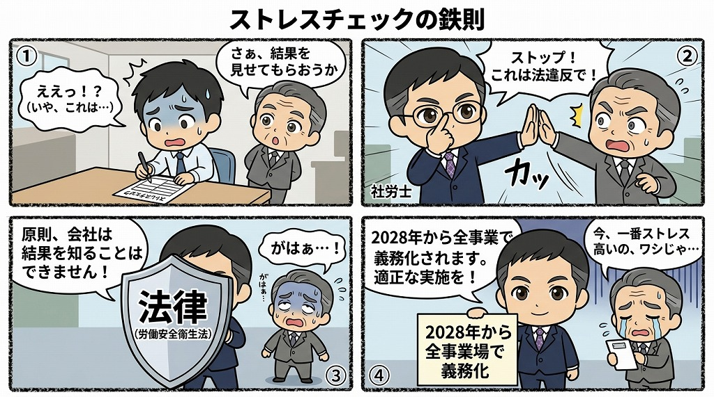

ストレスチェックの結果取り扱いにおける注意点と法的義務

大阪を中心にサービス業などの人事労務をサポートするアセント社労士事務所です。
2028年より、全事業所でのストレスチェックが義務化されます。本記事では、事業主が知っておくべき結果の取り扱いルールを解説します。不適切な運用は法令違反となるだけでなく、従業員との信頼関係を損なう恐れがあります。正しい知識を持ち、実効性のある制度設計を目指しましょう。
ストレスチェック結果の不適切な取り扱い実態
SNS上では、ストレスチェックの結果を会社側が把握しているとの投稿が見受けられます。「結果を見た会社から呼び出された」「結果が人事評価に直結している」といった内容です。もしこれらが事実であれば、法令に抵触する重大な問題です。ストレスチェックは本来、個人のセルフケアを目的としたツールです。他者との比較ではなく、自身の過去データと比較して活用すべきものです。しかし、情報の取り扱いを誤ると、従業員に不利益を及ぼす可能性があります。
会社は原則として個人の結果を知ることができない
ストレスチェックの結果は、原則として会社（事業者）が知ることはできません。この原則は労働安全衛生法（労働者の安全と健康を確保するための法律）で定められています。情報の漏洩や不適切な取り扱いには、罰則規定も設けられています。従業員が「会社に知られる」と懸念すれば、正直に回答できなくなります。これではストレスチェックの本来の目的が果たせません。会社は結果を直接閲覧できず、従業員に結果の提供を強要することも禁止されています。
実施者と社内担当者の役割分担
ストレスチェックを実施するのは「実施者」と呼ばれる専門家です。具体的には、産業医や外部の医師、保健師などがこれに当たります。検診機関や専門のサービス会社が提供するツールを利用する場合も多いでしょう。社内の人事担当者が従業員に案内を送ることは問題ありません。しかし、人事担当者が「実施者」として直接回答を回収することはできません。例えば、紙の回答用紙を人事担当者が回収し保管する行為は完全に不適切です。外部の実施者が結果を管理し、本人にのみ通知する仕組みを徹底してください。
健康診断とストレスチェックの決定的な違い
ストレスチェックと健康診断は、結果の取り扱いが大きく異なります。一般的な健康診断の結果は、会社が内容を把握することが認められています。数値が著しく悪い従業員に対し、会社は就業上の措置を講じる義務があるためです。一方、ストレスチェックの結果は、本人の同意がない限り会社へ開示されません。「健康診断と同じ感覚」で結果を閲覧しようとする管理者は注意が必要です。会社が関与できる範囲は、健康診断よりも厳格に制限されていると認識してください。
2028年度の義務化に向けた体制整備
現在は従業員50名未満の事業場では努力義務ですが、法改正により状況が変わります。2028年度（令和10年度）5月までに、全事業所での実施が義務化される予定です。小規模な事業所においても、適切な運用体制の構築が急務となります。形だけを整えて実施するだけでは、十分な効果は得られません。むしろ情報の扱いを誤れば、実施自体が従業員のストレス要因になりかねません。正しい知識に基づき、プライバシーに配慮した制度設計を行う必要があります。
例外的に会社が結果を知ることができるケース
原則として秘匿される結果ですが、例外的に会社が把握できるケースが2つあります。
1. 本人が面談を希望し、結果の開示に同意した場合
高ストレス者と判定された本人が、産業医による面談を希望する場合です。面談を申し出た時点で、結果が会社に開示されることに同意したとみなされます。会社は面談結果に基づき、就業場所の変更や労働時間の短縮などの措置を検討します。
2. 集団分析の結果
部署ごとのストレス傾向を分析した「集団分析」の結果は会社が把握できます。ただし、集団の人数が少ない場合は個人が特定される恐れがあります。一般的に10人未満の集団については、全員の同意がない限り分析結果を提示できません。個人の特定を防ぐための細かな制限があることを理解しておきましょう。
効果的なストレスチェック運用のために
ストレスチェックを単なる事務作業にしてはいけません。従業員が安心して受検できる環境を整えることが、職場改善の第一歩です。「会社には結果が漏れない」という信頼があってこそ、正確なデータが集まります。そのデータをもとに集団分析を行い、職場環境の改善につなげることが本来の姿です。次回の実施に向けて運用ルールを再確認してください。法改正への対応や実務上の不明点は、専門家である社会保険労務士への相談をお勧めします。
まとめ
- 結果の秘匿：ストレスチェックの結果は、原則として会社が知ることはできない
- 罰則がある：労働安全衛生法により、情報の漏洩や不適切な利用には罰則がある
- 義務化の対応：2028年度までに全事業所での実施が義務化されるため、早期の体制構築が必要
- 法令の遵守：人事担当者が直接回答を回収・保管する行為は法令違反となる
- 例外ケース：高ストレス者の面談申し出や、一定人数以上の集団分析のみ会社は把握可能
社労士へのご相談はこちら
アセント社労士事務所では、大阪のサービス業を中心に、負担の少ないストレスチェックの導入支援を行っています。
制度の形式的な導入に留まらず、従業員の定着率向上や生産性の改善につながる労働環境づくりをサポートいたします。